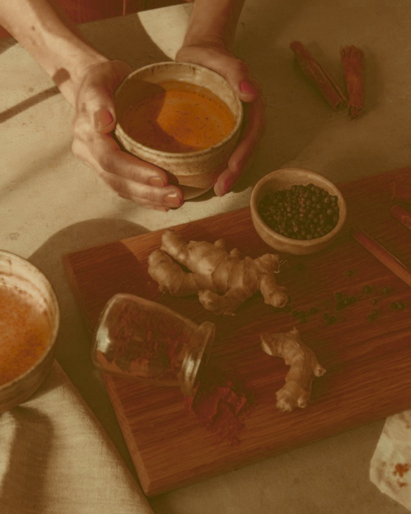
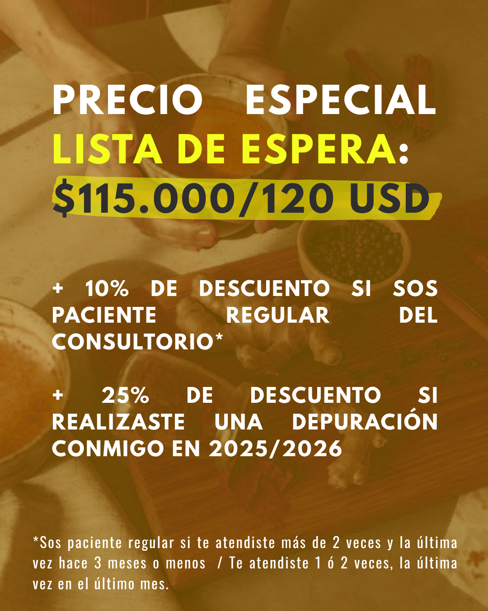

Programa grupal · 9 días
Programa grupal de 9 días con acompañamiento médico especializado para liberar toxinas, encender tu fuego digestivo y recuperar la claridad física y mental.
¿De qué se trata?
Nuestra capacidad de absorber nutrientes y vitalidad no depende solo de lo que comemos, sino de cómo lo digerimos. En la medicina Ayurveda, esta potencia transformadora es el Agni (fuego digestivo). Cuando el Agni se debilita por el ritmo diario, el estrés o los excesos, los alimentos no se procesan de manera óptima y el cuerpo genera Ama (toxinas acumuladas en los tejidos).
Esta depuración de 9 días no busca venderte un producto milagroso desde afuera, sino brindarle a tu cuerpo el ambiente propicio para que tu propia maquinaria metabólica elimine lo que interfiere con tu salud. A través de un plan de alimentación dividido en etapas, rutinas de autocuidado e infusiones claves, reseteamos el sistema de manera amable y guiada.
El fuego digestivo que transforma lo que comés en nutrición y vitalidad.
La toxina que se acumula cuando ese fuego se debilita — el punto de partida de la depuración.
Beneficios del programa
Liberás el material acumulado en los tejidos, favoreciendo una sensación inmediata de ligereza y deshinchazón.
Estimulás el Agni para mejorar la asimilación de nutrientes y reducir malestares como pesadez hepática, dolores menstruales, dolores físicos y síntomas digestivos.
Promovés un estado más sátvico (equilibrado y calmo), despejando la mente, reduciendo la fatiga y bajando el estrés crónico.
Al liberar bloqueos y mejorar la bioquímica corporal, el cuerpo recupera su capacidad natural de autorregulación y defensa.
Pasás por el cuerpo un aprendizaje vivencial que transforma tu intuición celular y tu manera de elegir el alimento en el día a día.

El proceso
Un recorrido gradual: preparamos el terreno, depuramos y volvemos a integrar. Cada fase le da al cuerpo lo que necesita para el siguiente paso.
Retiramos de forma gradual los alimentos inflamatorios y los que exigen mayor esfuerzo digestivo. Le damos la señal al cuerpo para que empiece a movilizar la toxina profunda mediante infusiones digestivas, respiración consciente y hábitos de calma al comer.
Ingresamos en la fase de monodieta nutritiva (Kitchari), una preparación ayurvédica de fácil asimilación que le permite a toda la energía metabólica enfocarse exclusivamente en eliminar toxinas sin perder nutrientes. Acompañamos con decocciones herbales, automasajes y rutinas diarias.
Volvemos de forma armónica a la alimentación completa. Con un cuerpo más liviano y receptivo, mapeamos sensaciones físicas para registrar qué alimentos nos hacen bien y construir una rutina alineada con nuestras necesidades.
El diferencial
Acompañamiento médico e integral. A diferencia de las dietas restrictivas o los retos détox genéricos, este plan combina la sabiduría ancestral del Ayurveda con el criterio de la medicina integrativa.
Atravesar la depuración junto a una comunidad te brinda red y acompañamiento diario.
El proceso cuenta con pautas claras, recomendaciones de seguridad para patologías específicas y herramientas adaptables para cuidar tu salud en todo momento.
Trabajamos cuerpo, mente y energía a través de la alimentación, infusiones, automasaje y ejercicios de respiración.
Preguntas frecuentes
Regalate esto

Quién te acompaña
Siento la medicina como un puente entre la ciencia, el respeto por los ritmos de la naturaleza y la sabiduría primal que cada cuerpo habita. Acompaño a las personas a reconectar con su propia capacidad de sanación, entendiendo la salud no como la ausencia de síntomas, sino como un estado de equilibrio dinámico entre cuerpo, mente y espíritu.
A través de estos espacios depurativos grupales, te guío paso a paso para que experimentes la transformación desde la observación y el registro amoroso de tu propia biología.